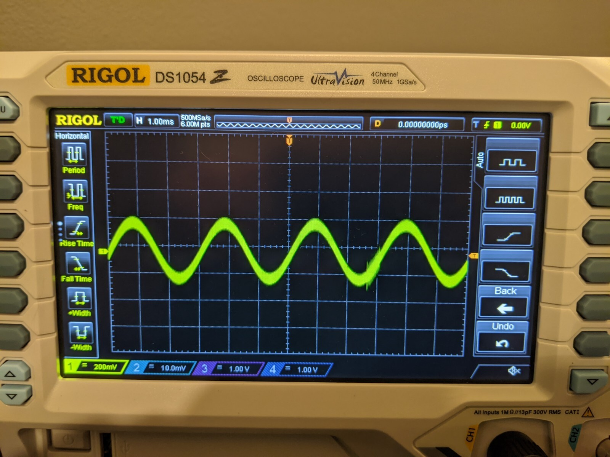
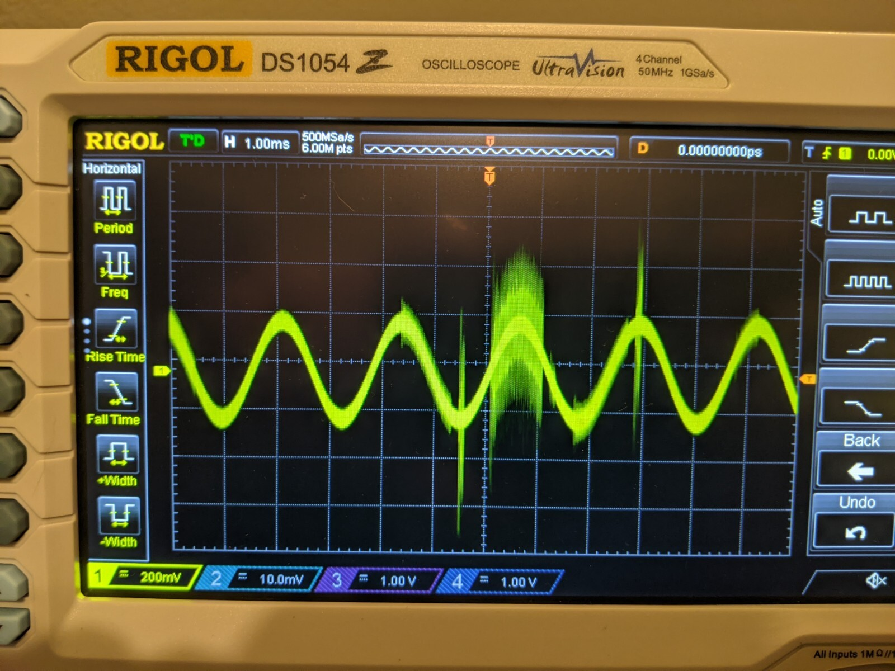
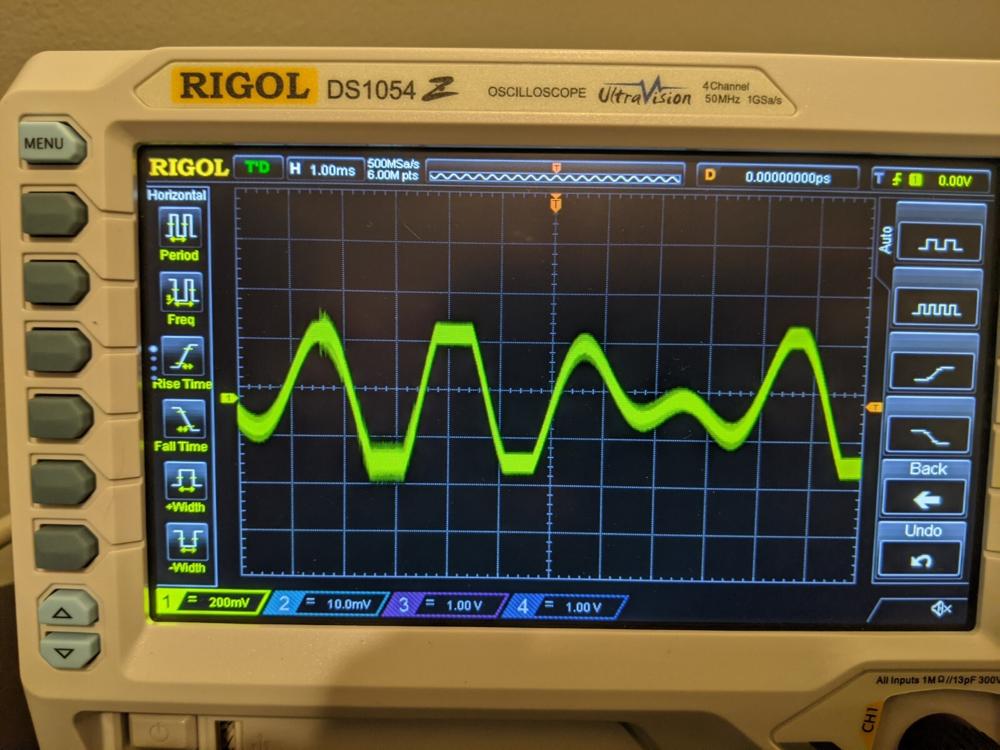
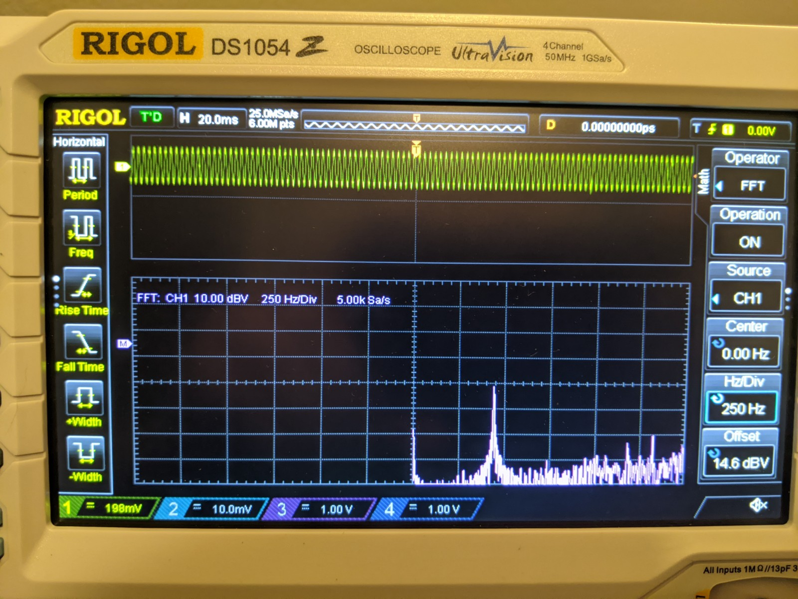
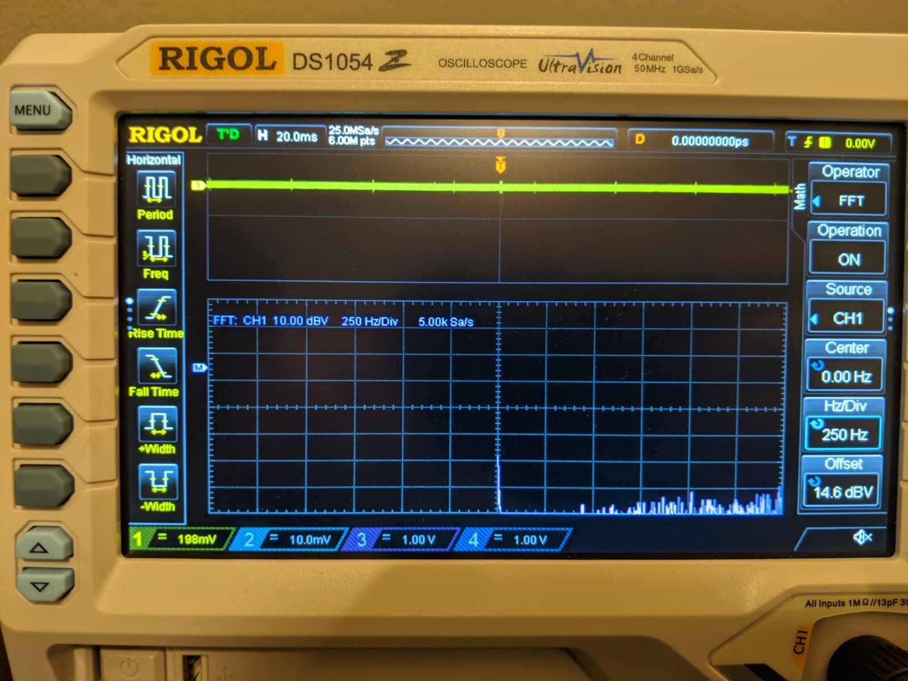
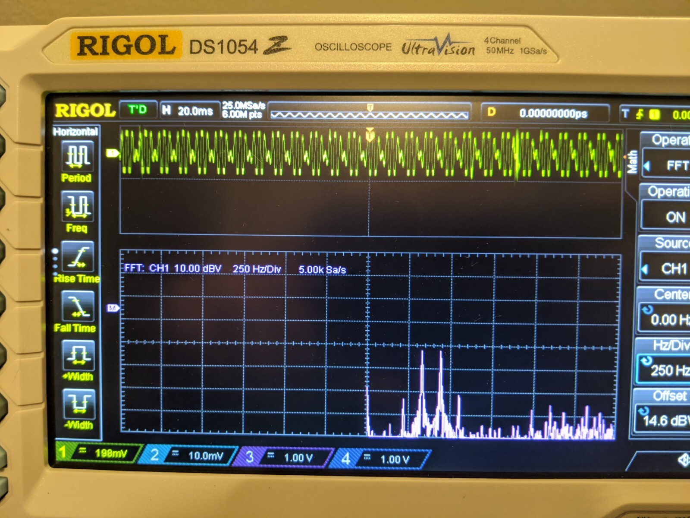

There's a concept in both Physics and Machine Learning called Convolution.
This might seem like a round about explanation, but to understand convolutions in machine learning, let's first look at what convolution means from a Physics perspective. In Physics and Mathematics, convolutions are related to fourier transforms, which are usually applied to waves.
To take a look at the inner workings of waves and fourier transforms, let's boot up the trusty oscilloscope.
Starting with the setup, I'm going to plug one end of my headphone cable into my laptop, and the other I'll attach my oscilloscope probe to. I'll attach the probe to the left audio channel, and I'll ground the probe on the ground connector on the audio cable.
Using an online tone generator , I'll be able to generator audible waves that my oscilloscope will be able to display.
Let's look at a simple sin wave. This sin wave is at 440 hz.
Here we have another sin wave, but this time at 330 hz.
These are pretty boring waves, not much to see here. But let's take a look at what happens when we add these waves together.
That looks more interesting! An important thing to know about waves is that when you add them together, the y value of the resulting wave is equal to the sum of the y values of the 2 operands. So assuming we have 2 waves, if at a given point on the x axis one wave has a y value of -1 and the other has a y value of 1, then the resulting wave will have a y value of 0 at that point x.
I promised a Fourier transform. A Fourier transform is a way to convert from the time domain into the frequency domain. What this does is it shows the corresponding frequencies that compose a wave. To demonstrate this, I'll set my oscilloscope to display the Fourier transform of these sin waves below. The two sets of waves that you see are the original signal on top, and the fourier transform of it on the bottom. Notice how the bottom wave has a spike that goes all the way up to the x-axis. This spike indicates the frequency of the wave we are looking at. In this case it is spiking at the 440hz mark on the x-axis.
I'll now demonstrate what the Fourier transform looks like when the signal is flat, i.e. no signal. You can see that there are no spikes in the fourier transform. You will notice that even with the signal turned off, there is still a small amount of noise that is easy to see when looking at the fourier transform. In a perfect world if the signal was completely flat, then the fourier transform would also be flat. Here we are seeing the messiness of the analog world.
Now, let's do both signals together. There are two bumps! The bump to the left indicates 330 hz and the bump on the right indicates 440 hz. If we, for example, wanted to amplify one frequency in the wave and filter out another, we could do that, and apply an inverse Fourier transform from that to construct a wave that has more signal and less noise! Do you see where this is heading?
But what do Fourier transforms have to do with convolutions? There is a very interesting property of the convolution operator such that the the convolution of f and g is equal to the inverse Fourier transform of the Fourier transform of f times the Fourier transform of g. This is called the convolution theorem To put this in mathematical notation, you can see a definition of the convolution operator, i.e. *, below.
What this means is that if we have an input signal and values to use as a filter, we can perform the convolution of these items to get out a filtered signal with just the particular features that we care about.
Now that we have seen how convolution is related to the Fourier transform, let's define how to calculate a convolution. The formula below is how you calculate a convolution of two continuous functions, f and g over an infinite time range.
Convolutions are commonly used for feature extraction in image processing. Since images are a discrete set of pixels and are finite in their bounds, we can simplify the convolution formula to what we see below. Keep in mind, and integral is simply a sum over a continuous set, so we can replace the integral with a simple sum in our case of discrete data.
Here we can see the result of a convolution being applied to an image.
This blog is about whatever I find interesting at this very moment. I'll post how-to articles on occasion and various lessons that I've learned in my career.
I am a software developer from Des Moines Iowa. I graduated from the University of Iowa with a B.S. in Computer Science.
I am interested in math, compilers, and interpreters, and I always strive to understand how various systems work from the ground up.
The languages I use most often include
I like working in a UNIX or Linux environment.